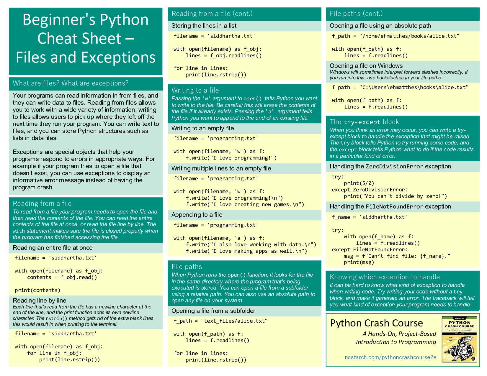
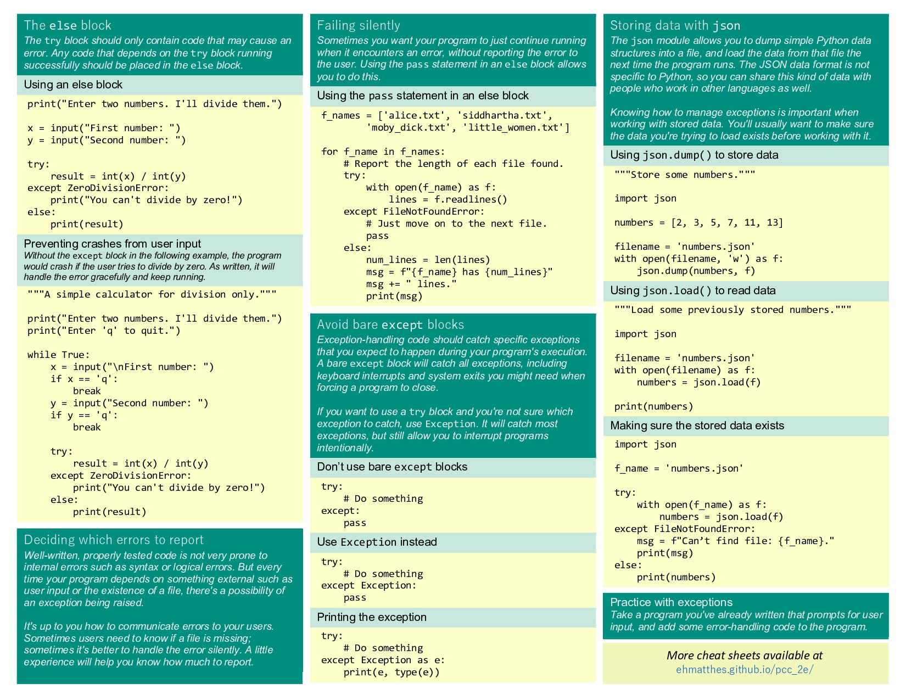

Unit 1: Programming Fundamentals
This unit was a review of ICS3U concepts including variables, data types, loops, conditionals, arrays, and methods in Java and Python.
View GitHub RepositoryProject: Word Analysis - Functions & File Processing
Task Description
Build a menu-driven Python application to analyze a text file containing over 300,000 words. The program implements several string-processing functions including palindrome detection, anagram finding, and word filtering by length, all using helper functions and file I/O.
My Approach
I wrote modular helper functions (is_palindrome, is_anagram, filter_by_length) and composed them into higher-level functions (find_palindromes, find_anagrams). The main program uses a while loop with input validation to drive a menu interface. Words are loaded from words.txt using file I/O with error handling, and the user can prune the list, search for palindromes, or find anagrams interactively.
Code Snippet
"""
Author: Qianhao Han
Date: Oct 9
Sources: A Practical Introduction to Python Programming - Online Textbook
"""
# Task functions
# 1. Create the function:
def is_palindrome(s):
"""
Returns a boolean value corresponding to whether the String s
is a palindrome or not.
"""
s = s.lower()
return s[: :-1] == s
# 2. Create the function:
def is_anagram(original, s):
"""
Returns a boolean value corresponding to whether the String s
is an anagram of original or not.
"""
if (original.lower() == s.lower()):
return False
else:
return sorted(original.lower()) == sorted(s.lower())
# 3. Create the function:
def find_palindromes(word_list):
"""
Finds all palindromes in a list of strings and displays them.
"""
cnt = 0
for word in word_list:
if is_palindrome(word):
print(word)
cnt += 1
print(f"There are {cnt} palindrones in the list.")
return
# 4. Create the function:
def find_anagrams(word_list, target):
"""
Finds all anagrams in a list of strings and displays them.
"""
cnt = 0
for word in word_list:
if is_anagram(target, word):
print(word)
cnt += 1
print(f"There are {cnt} anagrams for {target} in the list.")
return
# 5. Create the function:
def filter_by_length(word_list, length):
"""
Returns a new list of strings filtered by the provided length.
"""
new_word_list = []
for word in word_list:
if len(word) == length:
new_word_list.append(word)
return new_word_list
# 6. Menu-driven application
def load_words(file_path):
"""Loads words from a text file into a list."""
try:
with open(file_path, 'r') as file:
words = [line.strip() for line in file]
print(f"\nCurrently have {len(words)} words in memory.\n")
return words
except FileNotFoundError:
print(f"Error: The file at {file_path} was not found.")
return []
def print_menu():
print("Word Analysis\n")
print("1 - Load/reload words from file")
print("2 - Update word list by word length")
print("3 - Find palindromes")
print("4 - Find anagrams")
print("5 - Quit")
def main():
word_list = []
while True:
print_menu()
choice = input("Choose an action: ").strip()
if choice == "1":
word_list = load_words("words.txt")
elif choice == "2":
if not word_list:
print('List is empty. Choose 1 to load it.\n')
continue
length = int(input("Length: ").strip())
word_list = filter_by_length(word_list, length)
elif choice == "3":
if not word_list:
print('List is empty. Choose 1 to load it.\n')
continue
find_palindromes(word_list)
elif choice == "4":
if not word_list:
print('List is empty. Choose 1 to load it.\n')
continue
target = input("Type a word to find its anagrams: ").strip()
find_anagrams(word_list, target)
elif choice == "5":
print("Bye!")
break
else:
print('Please choose a number between 1-5.\n')
if __name__ == "__main__":
main()What I Learned
This project reinforced the power of modular design -- writing small, focused helper functions like is_palindrome and is_anagram made the higher-level logic much cleaner. I also practiced file I/O with error handling using try/except, list comprehensions for concise data loading, and building an interactive menu-driven interface with input validation. Working with a dataset of 370,000+ words highlighted the importance of choosing efficient algorithms for string comparison.
Lesson: File I/O and Error Handling
Learning Goals
In this lesson, we learned how to read and write to files using Python, and how to catch errors using exception handling with try/except blocks. These skills were essential for the Word Analysis project above.
Key Concepts
- Reading from files - Using
open()and thewithstatement to safely read file contents - Writing to files - Using
'w'mode to write and'a'mode to append - File paths - Understanding relative and absolute paths for locating files
- Exception handling - Using
try/exceptblocks to gracefully handle errors likeFileNotFoundErrorandZeroDivisionError - Storing data with JSON - Using
json.dump()andjson.load()to persist data between program runs
Reference Materials
We used these Python cheat sheets as reference materials for file handling and exception handling:

